|
Территории предприятия
|
|
Справочник территорий содержит все территории предприятия.
На рисунке отображён список территорий:
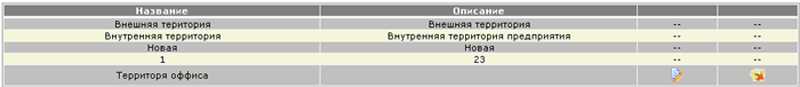
|
|
Территорией может являтся например: оффисное здание, здание цеха, улица, этаж здания
и т.д.
Для создания новой территории необходимо нажать кнопку
,
после чего отобразиться окно для создания новой территории:
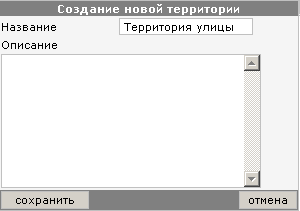
После ввода названия и описания территории нажмите на кнопку сохранить.
Новая территория добавится к списку.
|
|
Для редактирования реквизитов территории нажмите на кнопку
в строке списка с интерисующей вас территорией.
Для удаления территории нажмите на кнопку .
Если кнопки для редактирования и удаления не доступны, это означает, что данные территориий входят
в состав рабочих зон и не подлежат редактированию и удалению. Если территория не входит ни в одну
рабочую зону, то она доступна для редактирования и удаления.
По умолчанию система содержит две территории: внешняя и внутренняя, которые недоступны для редактирования и удаления.
|
|
Рабочие зоны
|
|
Справочник рабочих зон содержит все рабочие зоны предприятия.
Рабочие зоны включают в себя территории предприятия. В одной рабочей зоне может содержаться
одна и более территорий.
Рабочие зоны предназначены
для определения мест, в которых должны осуществлять работу те или иные сотрудники.
Рабочие зоны используются для расчёта отработанного времени, а также для формирования отчетов по нарушениям режима прохода.
Ниже представлен список рабочих зон:
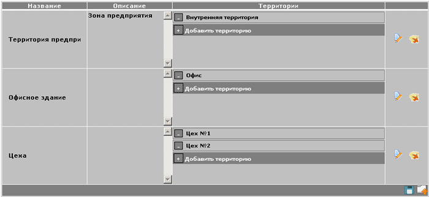
|
|
Для создания рабочей зоны необходимо нажать на кнопку ,
после чего отобразиться окно для создания новой рабочей зоны:
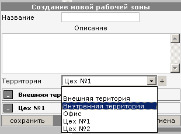
Введите название рабочей зоны и, если необходимо, описание. Для добавления к рабочей зоне
территории предпрития выберите из выпадающего списка "Территоории"
интерисующую территорию. После выбора территории нажмите на кнопку
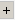, выбранная территория добавится
к списку. После наполнения рабочей зоны территориями - нажмите кнопку "сохранить"
для сохранения рабочей зоны.
|
|
Наполнять рабочую зону территориями можно также в самом
списке рабочих зон. Для этого нажмиете на
в строке с интересующей Вас рабочей зоной, после чего появится выпадающий
список как показано ниже на рисунке:
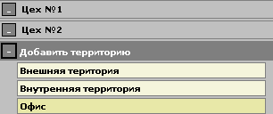
Щёлкните по нужной территории левой кнопкой мыши - территория отобразится в списке.
Удаление территории из рабочей зоны происходит аналогично добавлению. Для
удаления, нажмите на кнопку
напротив удаляемой территории.
После всех манипуляций с территориями, а также изменениями имени и описания рабочих
зон необходимо сохранить изменения. Для сохранения изменений нажмите на кнопку
|
|
|
Турникеты
|
|
Справочник турникетов состоит из двух частей и содержит информацию о группах
турникетов и самих турникетах.
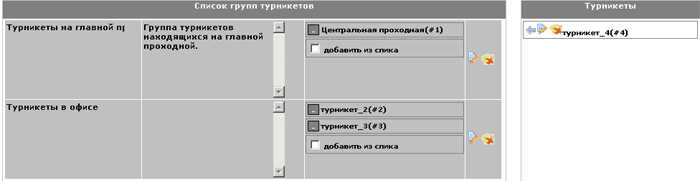
|
|
В левой части отображаются группы турникетов, в правой турникеты, которые
не принадлежат ни одной из групп. Если турникет не принадлежит ни одной
из групп он не будет задействован системой.
В правой части находится список (стек) свободных (не принадлежащих ни одной группе) турникетов.
Рассмотрим сначала создание турникетов. Для создания турникета нажмите на
кнопку , которая находится
внизу списка турникетов. После чего отобразиться
окошко с реквизитами создаваемого турникета.
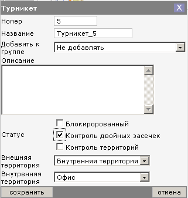
Реквизиты турникета:
Номер - внутренний идентификационный номер турникета, номер прошивки турникета.
По это номеру система определяет турникет.
При его вводе убедитесь, что это именно тот номер турникета, который Вы заводите
в систему.
Название - наименование турникета.
Добавить к группе - выберите из выпадающего списка группу турникетов,
если хотите, чтобы после создания турникет автоматически добавился
к выбранной группе турникетов. Если не хотите такого эффекта, то турникет можно добавить
к группе позже.
Описание - Введите текстовое описание турникета.
Статус:
Блокированный - турникет никого не впускает и не выпускает, кроме сотрудников имеющих
статус пропуска "Администратор".
Контроль двойных засечек - включает контроль двойных засечек.
Контроль территорий - используется для контроля последовательности
прохода по террриториям предприятия. Если сотрудник посещает территории
в некорректной последовательности, то турникет откажется его пускать.
Внешняя территория - выберите из выпадающего списка территорию с
которой турникет преграждает вход (откуда осуществляется вход).
Внутренняя территория - выберите из выпадающего списка территорию с
которой турникет преграждает выход.
После ввода реквизитов турникета нажмите кнопку "Сохранить" - новый турникет
появится в списке турникетов.
Для редактирования реквизитов турникетов необходимо нажать на кнопку
, которая находится
рядом с названием турникета. После нажатия кнопки отобразится окно
с реквизитами турникета. Отредактируйте реквизиты и нажмите кнопку "Сохранить".
|
|
Теперь рассмотри группы турникетов.
Для создании группы турникетов нажмите на кнопку ,которая находится
внизу списка групп турникетов. После нажатия отобразиться окно:
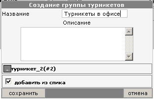
Введите название группы и, если необходимо, описание. Если Вы хотите, можно
сразу же добавить в создаваемую группу турникеты. Для этого установите
галочку "Добавить из списка" далее нажмите на кнопку ,
которая находится рядом с именем турникета, который Вы хотите добавить. После нажатия,
выбранный турникет отобразится в окне (как показано на рисунке). Если Вы по каким-то
причинам решите удалить турникет, нажмите на кнопку .
После заполнения группы турникетами нажмите кнопку "Сохранить".
|
|
Для добавления турникетов в уже созданные группы нужно установить галочку "Добавить из списка"
в строке с интересующей Вас группой, далее нажмите на кнопку
в списке турникетов.
Для удаления турникета из группы нажмите на кнопку
, после чего турникет отобразится
в списке свободных турникетов.
После всех манипуляций с группами, не забудьте сохранить изменения. Для этого
нажмите на кнопку , которая находится
внизу списка групп турникетов.
|
|
|
Режимы
|
|
Режимы служат для определения интервалов времени в течени суток, в которые может быть осуществлён
проход на ту или иную территорию, рабочую зону.
По умолчанию в системе существуют два режима прохода - запрещённый и разрешённый.
Ниже отображён список режимов
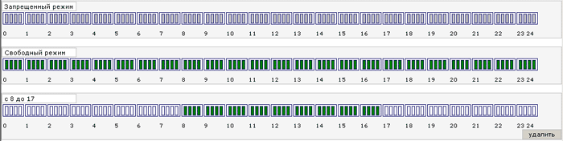
|
|
Временная линия отображает 96 15-минутных интервалов в сутках. Одна временная
линия - один режим прохода.
Промежутки подсвеченные зелёным цветом говорят о том что в данное время проход
разрешён в противном случае - запрещён.
Например на рисунке изображены три режима "Запрещённый" - проход запрещён 24 часа
в сутки, "Разрешённый" - проход разрешён
Для создания нового режима введите имя нового режима. После чего нужно указать
промежуток времени в течение которого будет разрешён проход.
|
|
Смены
|
|
Смены нужны для расчёта отработанного времени и формирования отчетов по нарушениям пропускного режима. Не влияют на
возможность осуществления прохода.
Чтобы создать смену нажмите кнопку внизу списка.
Отобразится форма:
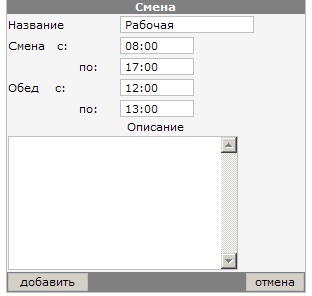
Введите название смены, время начала и окончания смены, а так же время начала и окончания обеда.
Если обеда нет то введите 00:00 в поля начала и окончания обеда.
Нажмите кнопку "Добавить".
|
|
Допуска
|
|
Допуск определяет в какое время и через какую группу турникетов разрешён или запрещён проход.
Например на рисунке допуск с именем "Рабочий" означает что через группу турникетов "Проходная" можно пройти во время
определённое в режиме "c 8-17"
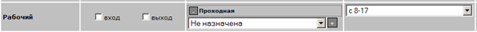
|
|
Для создания нового допуска нажмите на кнопку внизу списка.
Отобразится форма:
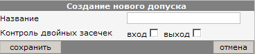
|
|
Введите название допуска и, если необходимо, выставьте галочки для контроль двойных засечек на входе и/или выходе.
Затем нажмите сохранить.
После того как допуск будет добавлен нужно добавить группы точек прохода и назначить им режимы.
Для этого:
-
В строке с допуском в колонке "Группа турникетов" из списка выберите группу турникетов и нажмите на кнопку "+"
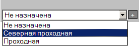
-
После того как Вы добавили группу турникетов, нужно назначить ей режим (колонка "Режим доступа"),
выбирите режим из списка, который находится правее выбранной группы турникетов.
-
Если в допуск необходимо включить еще группы турникетов то повторите пункты 1 и 2.
-
После всех проделанных оппераций нужно сохранить изменения, для этого нажмите на кнопку
внизу списка.
|
|
Графики
|
Графики определяют переодичную последовательность дней в которые сотруднику разрешен или запрещён
проход. Интервал повторения последовательности равен количеству дней в графике.
Один день графика представляет собой совокупность:
-
Смена - определяет временной интервал работы сотрудника - не влияет на проход сотрудника.
Смена нужна
для расчёта рабочего времени и определения нарушений.
-
Доступ - определяет, когда и через какие группы точек прохода разрешен/запрещен проход.
-
Рабочая зона - определяет территорию(-и) на которых должен работать сотрудник.
На рисунке приведён пример графика:
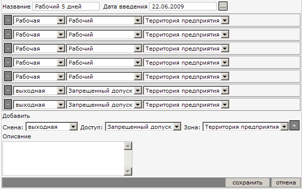
Данный график состоит из 7 дней, введён он от понедельника (22.06.2009) это означает что он
повторится через 7 дней (первым днем графика станет понедельник 29.06.2009).
Сотрудник которому назначен данный график может проходить с понедельника по пятницу через
группы точек прохода и режиму определённых в доступе "Рабочий", а в субботу, воскресенье доступ у него
запрещён.
Ввиду того, что графики имеют периодичность, дату введения графика следует заводить так, чтобы первый день был
понедельником.
|